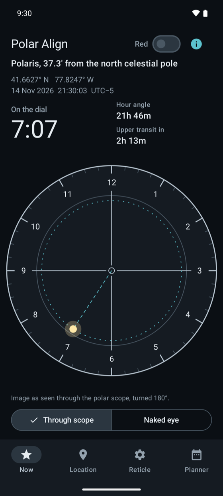
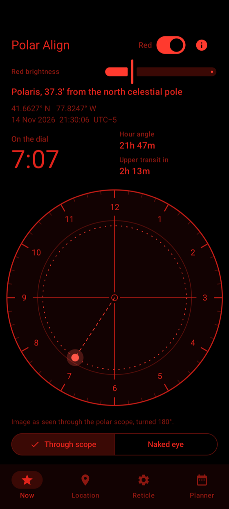
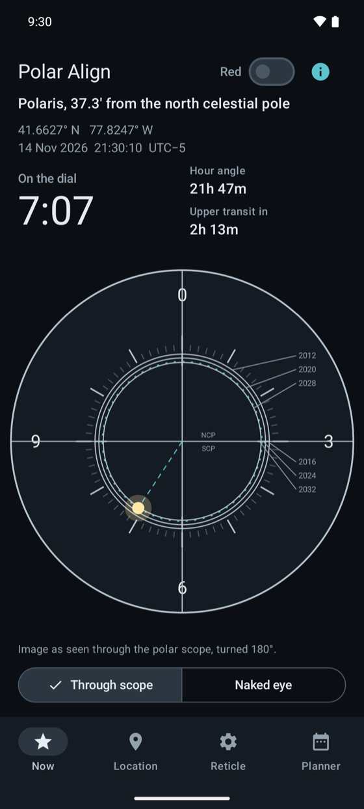
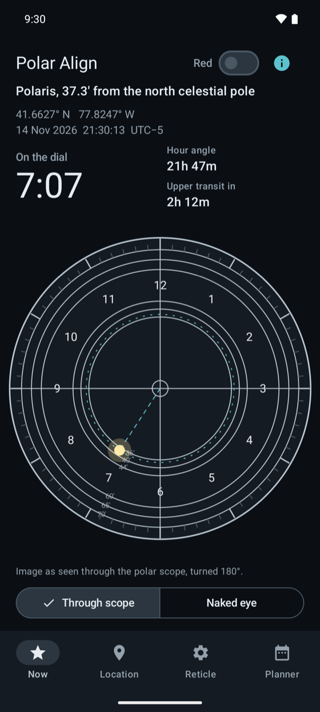
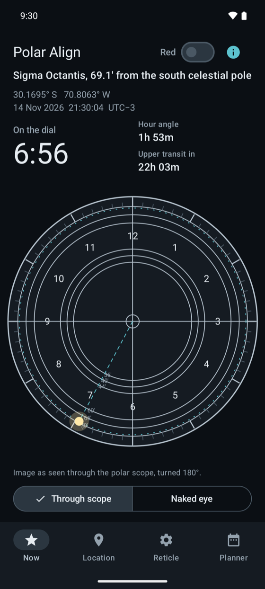

Polar Align gives you the clock position for your site and the current time. Put the star on the dot, lock the mount, start imaging.
Get it on Google PlayAndroid. Works offline, no ads, no account.


Red mode hides the system bars, so nothing white stays on screen while you stand at the mount.
Type your coordinates, or tap "Use my location once". The position is read only when you tap and never leaves your phone.
The star is placed on the reticle the way you see it through the scope, so you copy the picture instead of flipping it in your head. Through-the-scope view is turned 180°, or switch to the naked-eye view.



Pro adds Sky-Watcher, iOptron, Orion, Celestron, Explore Scientific EXOS-2 and Vixen PF-L plates, drawn from the manufacturers' manuals.
Positions include precession, nutation and aberration. We compared the hour angle with the astropy library, in both hemispheres. Atmospheric refraction is not applied.
The clock-face reticle with the live star position.
A one-time purchase.
How a reticle works and how to read the clock position, with sources.